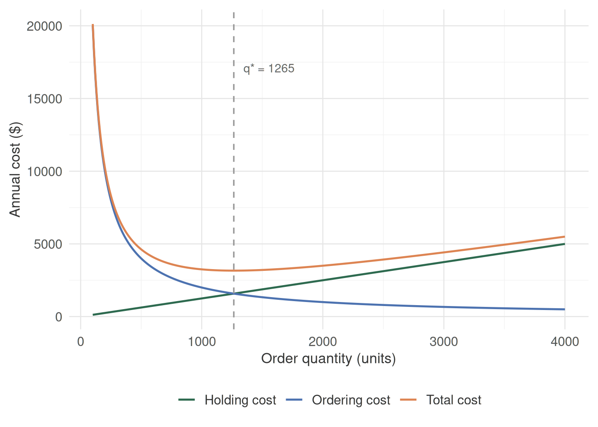
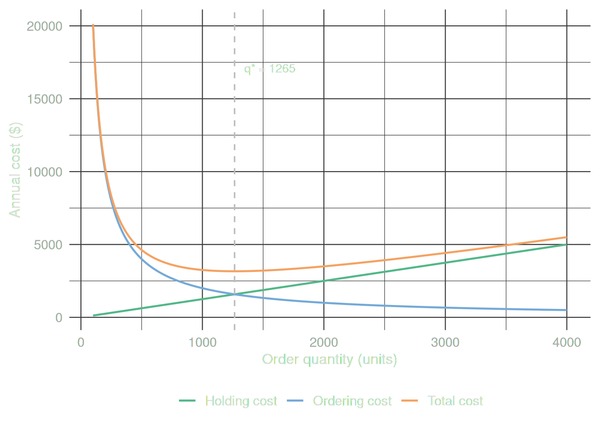
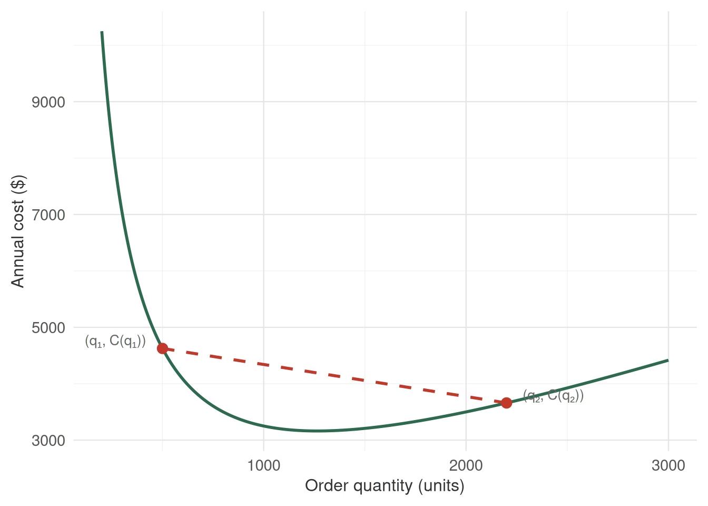
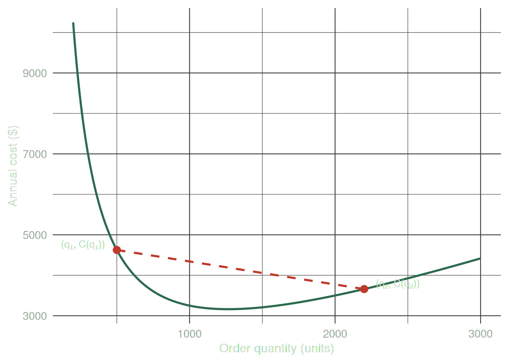
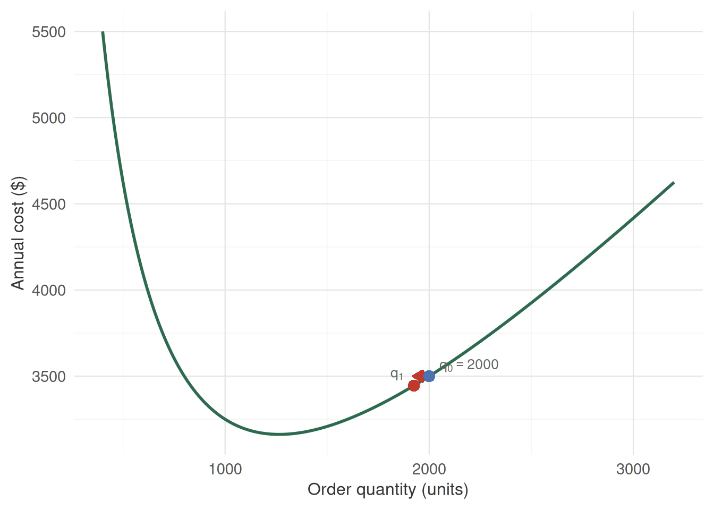
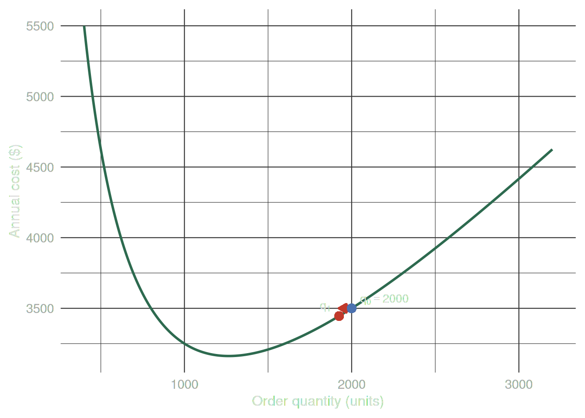

Every warehouse manager knows the feeling. Order too little and you run out of stock mid-week, lose sales, and scramble to reorder at a premium. Order too much and you pay to store inventory nobody needs, watch it depreciate, and tie up capital that could go elsewhere. Somewhere between those two failures is the right number — and finding it does not require guessing.
The total cost of managing inventory has two competing pieces. Holding cost grows with order quantity: the more units you store, the more you spend on warehouse space, insurance, and opportunity cost. Ordering cost goes the other way: the more you order per shipment, the fewer shipments you make and the less you spend on delivery and setup fees.
Let \(q\) denote the order quantity, \(D\) the annual demand, \(h\) the holding cost per unit per year, and \(s\) the fixed cost per order. The classical Economic Order Quantity (EOQ) model combines these into a total annual cost:
\[ C(q) = \frac{hq}{2} + \frac{Ds}{q}, \qquad q > 0. \tag{2.1}\]
The first term increases linearly with \(q\); the second decreases hyperbolically. Their sum produces a U-shaped curve with a single minimum — the kind of structure where calculus is exactly the right tool.
The derivative \(C'(q)\) measures how \(C\) changes when \(q\) changes by an infinitesimal amount. At any point \(q_0\):
\[ C'(q_0) = \lim_{\varepsilon \to 0} \frac{C(q_0 + \varepsilon) - C(q_0)}{\varepsilon}. \]
If \(C'(q_0) > 0\), the cost increases as \(q\) increases — we are to the right of the minimum. If \(C'(q_0) < 0\), it decreases — we are to the left. The derivative encodes both direction and rate of change.
For the EOQ cost:
\[ C'(q) = \frac{h}{2} - \frac{Ds}{q^2}. \]
Think of the derivative at a point as the slope of the tangent line to the curve at that point. A positive slope means “going uphill to the right.” A negative slope means “going downhill to the right.” Zero slope means the tangent is flat — we are at a critical point.
In multiple dimensions, the gradient \(\nabla f\) generalizes the derivative: it is a vector pointing in the direction of steepest ascent. Moving opposite to the gradient — downhill — brings us closer to a minimum.
In several variables, the derivative generalizes to the gradient:
\[ \nabla f(\mathbf{x}) = \left[\frac{\partial f}{\partial x_1},\ \frac{\partial f}{\partial x_2},\ \ldots,\ \frac{\partial f}{\partial x_p}\right]^\top. \]
The gradient at \(\mathbf{x}_0\) points in the direction of steepest ascent of \(f\) from that point. Its magnitude measures how rapidly \(f\) changes in that direction. This geometric picture is the foundation of every first-order optimization method we will encounter in this book.


The U-shape of \(C(q)\) in Figure 2.1 reveals the key idea: at the minimum, the curve has zero slope. The holding cost is rising at exactly the rate the ordering cost is falling. Neither term dominates — they balance.
This balance is not a coincidence. It is a consequence of the first-order optimality condition: at a local minimum \(q^*\) of a differentiable function, the derivative must vanish.
Let \(f : \mathbb{R}^p \to \mathbb{R}\) be differentiable. If \(\mathbf{x}^*\) is a local minimum of \(f\), then
\[ \nabla f(\mathbf{x}^*) = \mathbf{0}. \]
In one dimension: \(f'(x^*) = 0\).
This condition is necessary but not sufficient on its own — a zero gradient identifies a candidate, not a confirmed minimum. A maximum and a saddle point also satisfy \(\nabla f = 0\).
For the EOQ cost, setting \(C'(q) = 0\):
\[ \frac{h}{2} - \frac{Ds}{q^2} = 0 \implies q^* = \sqrt{\frac{2Ds}{h}}. \tag{2.2}\]
With \(D = 10{,}000\), \(s = 200\), and \(h = 2.5\), this gives \(q^* = \sqrt{1{,}600{,}000} = 1{,}265\) units — the vertical line in Figure 2.1.
The condition \(\nabla f(\mathbf{x}^*) = \mathbf{0}\) is necessary for a local minimum — but a zero gradient alone does not confirm that you have found one. The function \(f(x) = x^3\) satisfies \(f'(0) = 0\), yet \(x = 0\) is an inflection point, not a minimum. Always verify second-order conditions or use structural properties (such as convexity) to confirm.
A point where \(\nabla f = \mathbf{0}\) is called a critical point. Three geometric possibilities exist: a minimum, a maximum, or a saddle point. The second derivative determines which.
In one dimension, the second derivative \(f''(x^*)\) measures how quickly the slope is changing at the critical point:
For the EOQ cost, \(C''(q) = 2Ds/q^3 > 0\) for all \(q > 0\). The critical point at \(q^*\) is confirmed as a minimum.
In multiple variables, the second-order information is encoded in the Hessian matrix \(H_f(\mathbf{x})\), whose \((i,j)\)-th entry is the mixed partial derivative:
\[ [H_f(\mathbf{x})]_{i,j} = \frac{\partial^2 f}{\partial x_i\, \partial x_j}. \]
The Hessian plays the role of the second derivative: it captures the curvature of \(f\) in every direction simultaneously.
Let \(\mathbf{x}^*\) satisfy \(\nabla f(\mathbf{x}^*) = \mathbf{0}\).
Positive definiteness of the Hessian is the multivariable generalization of \(f'' > 0\). Checking it amounts to verifying that all eigenvalues of \(H_f(\mathbf{x}^*)\) are positive — or equivalently, that all leading principal minors of \(H_f(\mathbf{x}^*)\) are positive (Sylvester’s criterion).
A quadratic Taylor expansion of \(f\) around a critical point \(\mathbf{x}^*\) gives:
\[ f(\mathbf{x}^* + \mathbf{v}) \approx f(\mathbf{x}^*) + \underbrace{ \nabla f(\mathbf{x}^*)^\top \mathbf{v}}_{=\,0} + \frac{1}{2}\, \mathbf{v}^\top H_f(\mathbf{x}^*) \mathbf{v}. \]
The first-order term vanishes at a critical point. The sign of the remainder depends entirely on \(\mathbf{v}^\top H_f(\mathbf{x}^*) \mathbf{v}\):
The second-order conditions guarantee a local minimum — a point better than its immediate neighbors. For optimization in practice, we usually want a global minimum. And local methods, including gradient descent, can get stuck in local minima if the function has the wrong shape.
Convexity is what prevents this.
A function \(f : \mathbb{R}^p \to \mathbb{R}\) is convex if for any two points \(\mathbf{x}, \mathbf{y}\) and any \(\lambda \in [0, 1]\):
\[ f\!\left(\lambda \mathbf{x} + (1-\lambda)\mathbf{y}\right) \leq \lambda f(\mathbf{x}) + (1-\lambda) f(\mathbf{y}). \tag{2.3}\]
Geometrically: the function lies below or on the chord connecting any two points on its graph.
This definition has a powerful consequence: a convex function has no local minima that are not also global. If you find a point where \(\nabla f = \mathbf{0}\) and \(f\) is convex, you have found the global minimum — there is nothing better anywhere.
A strictly convex function looks like a bowl. Any ball you place inside rolls to the bottom — the unique global minimum. A non-convex function has bumps and valleys; the ball may settle in a local depression without ever reaching the lowest point.
For convex functions, the first-order condition \(\nabla f(\mathbf{x}^*) = \mathbf{0}\) is not just necessary — it is also sufficient for a global minimum.
The EOQ cost \(C(q) = hq/2 + Ds/q\) is convex on \(q > 0\): its second derivative \(C''(q) = 2Ds/q^3\) is strictly positive everywhere on the domain. The critical point at \(q^*\) is therefore the unique global minimum. No other order quantity can do better.
Several equivalent conditions characterize convexity:
Most objectives we will encounter in this book are convex by construction. This is not accidental — the models are designed that way deliberately. Convexity guarantees that any point satisfying the first-order conditions is a global minimum, not merely a local one. There is no risk of a solver finding a bad solution that happens to satisfy \(\nabla f = \mathbf{0}\). When we arrive at the optimization problems in Part III, this property will be the reason we can trust the solutions we compute.
The sum of two convex functions is convex, and a nonnegative scalar multiple of a convex function is convex. These preservation rules allow us to certify convexity for complex objectives by decomposing them into simpler pieces.


When a closed-form solution to \(\nabla f = \mathbf{0}\) exists — as it does for the EOQ — calculus gives us the answer directly. The derivative equation is solved in closed form, and we are done. But most objective functions encountered in machine learning have no closed-form minimizer. The equation \(\nabla f(\mathbf{x}) = \mathbf{0}\) may be nonlinear or involve thousands of unknowns that must be solved numerically.
Gradient descent is the simplest numerical strategy. Its logic is purely geometric: the gradient \(\nabla f(\mathbf{x})\) points uphill. Moving in the direction \(-\nabla f(\mathbf{x})\) — the negative gradient — takes us downhill.
Starting from an initial point \(\mathbf{x}_0\), one gradient descent step produces:
\[ \mathbf{x}_1 = \mathbf{x}_0 - \eta\, \nabla f(\mathbf{x}_0), \tag{2.4}\]
where \(\eta > 0\) is the step size (also called the learning rate). The step size controls how far we move along the downhill direction.
On the EOQ cost, one step from \(q_0 = 2{,}000\) with \(\eta = 0.05\):
\[ C'(2000) = \frac{2.5}{2} - \frac{10000 \times 200}{2000^2} = 1.25 - 0.5 = 0.75. \]
\[ q_1 = 2000 - 0.05 \times 0.75 = 1999.96. \]
That is a small step — the derivative has units of dollars per unit, and \(\eta\) must be calibrated accordingly. The point is not the arithmetic; it is the direction. The gradient told us we were too far right (positive derivative means we should decrease \(q\)), and the step corrects course.
Gradient descent, as described here, is a geometric idea — not a complete algorithm. The one-step picture in Equation 2.4 captures the logic. Repeated application moves steadily toward the minimum.
What we have not specified: how to choose \(\eta\), when to stop, how to handle noisy or high-dimensional settings. Those details matter enormously in practice and are the subject of Chapter 6, which covers first- and second-order numerical methods in full. The purpose here is only geometric: the gradient tells you where uphill is, and you go the other way.


Exercise 2.1. A server provisioning problem has the following response time cost:
\[ L(n) = \frac{a}{n} + b \cdot n^2, \qquad n > 0, \]
where \(n\) is the number of allocated servers, \(a > 0\) captures the throughput benefit of more servers, and \(b > 0\) captures the coordination overhead that grows super-linearly.
Exercise 2.2. Let \(f(x, y) = (x - 2)^2 + (y - 3)^2 + xy\).
Exercise 2.3. The gradient descent update \(x_{t+1} = x_t - \eta f'(x_t)\) applied to \(f(x) = x^2\) starting from \(x_0 = 10\):
Exercise 2.4 — Graduate level. Consider a function \(f : \mathbb{R}^p \to \mathbb{R}\) that is differentiable and convex.
---
title: "Unconstrained Optimization"
---
```{r}
#| label: setup
#| include: false
library(ggplot2)
library(dplyr)
library(tidyr)
library(here)
source(here::here("R/laurelin_theme.R"))
theme_set(theme_laurelin())
```
```{python}
#| label: setup-py
#| include: false
import sys
import os
import numpy as np
import pandas as pd
import matplotlib.pyplot as plt
import matplotlib.ticker as ticker
# Resolve python/ whether cwd is the project root or the chapter dir
for _cand in ("python", os.path.join("..", "python")):
if os.path.isdir(_cand):
sys.path.insert(0, os.path.abspath(_cand))
break
from laurelin_plot import lc, apply_light, apply_dark, reset_style
```
::: {.callout-note collapse="true" appearance="simple"}
## Required packages
::: {.panel-tabset group="language"}
## R
```r
library(ggplot2)
library(dplyr)
library(tidyr)
```
## Python
```python
import numpy as np
import pandas as pd
import matplotlib.pyplot as plt
import matplotlib.ticker as ticker
```
:::
:::
Every warehouse manager knows the feeling. Order too little and you
run out of stock mid-week, lose sales, and scramble to reorder at a
premium. Order too much and you pay to store inventory nobody needs,
watch it depreciate, and tie up capital that could go elsewhere.
Somewhere between those two failures is the right number — and finding
it does not require guessing.
## Derivatives and the direction of change {#sec-unconstrained-derivatives}
The total cost of managing inventory has two competing pieces. Holding
cost grows with order quantity: the more units you store, the more you
spend on warehouse space, insurance, and opportunity cost. Ordering cost
goes the other way: the more you order per shipment, the fewer shipments
you make and the less you spend on delivery and setup fees.
Let $q$ denote the order quantity, $D$ the annual demand, $h$ the
holding cost per unit per year, and $s$ the fixed cost per order. The
classical Economic Order Quantity (EOQ) model combines these into a
total annual cost:
$$
C(q) = \frac{hq}{2} + \frac{Ds}{q},
\qquad q > 0.
$$ {#eq-eoq-cost}
The first term increases linearly with $q$; the second decreases
hyperbolically. Their sum produces a U-shaped curve with a single
minimum — the kind of structure where calculus is exactly the right tool.
The derivative $C'(q)$ measures how $C$ changes when $q$ changes by
an infinitesimal amount. At any point $q_0$:
$$
C'(q_0) = \lim_{\varepsilon \to 0} \frac{C(q_0 + \varepsilon) -
C(q_0)}{\varepsilon}.
$$
If $C'(q_0) > 0$, the cost increases as $q$ increases — we are to
the right of the minimum. If $C'(q_0) < 0$, it decreases — we are to
the left. The derivative encodes both direction and rate of change.
For the EOQ cost:
$$
C'(q) = \frac{h}{2} - \frac{Ds}{q^2}.
$$
::: {.callout-tip}
## The derivative as slope and direction
Think of the derivative at a point as the slope of the tangent line to
the curve at that point. A positive slope means "going uphill to the
right." A negative slope means "going downhill to the right." Zero slope
means the tangent is flat — we are at a critical point.
In multiple dimensions, the gradient $\nabla f$ generalizes the
derivative: it is a vector pointing in the direction of steepest ascent.
Moving opposite to the gradient — downhill — brings us closer to a
minimum.
:::
In several variables, the derivative generalizes to the **gradient**:
$$
\nabla f(\mathbf{x}) = \left[\frac{\partial f}{\partial x_1},\
\frac{\partial f}{\partial x_2},\ \ldots,\ \frac{\partial f}{\partial
x_p}\right]^\top.
$$
The gradient at $\mathbf{x}_0$ points in the direction of steepest
ascent of $f$ from that point. Its magnitude measures how rapidly $f$
changes in that direction. This geometric picture is the foundation of
every first-order optimization method we will encounter in this book.
```{r}
#| label: eoq_curve_base
#| output: false
#| echo: false
# EOQ parameters
D <- 10000 # annual demand (units) # <1>
h <- 2.5 # holding cost ($/unit/year) # <2>
s <- 200 # ordering cost ($/order) # <3>
q_vals <- seq(100, 4000, by = 10)
eoq_df <- tibble(
q = q_vals,
holding = h * q / 2, # <4>
ordering = D * s / q, # <5>
total = holding + ordering # <6>
) |>
pivot_longer(
cols = c(holding, ordering, total),
names_to = "component",
values_to = "cost"
) |>
mutate(
component = factor(
component,
levels = c("holding", "ordering", "total"),
labels = c("Holding cost", "Ordering cost", "Total cost")
)
)
# Optimal q*
q_star <- sqrt(2 * D * s / h) # <7>
p_base <- ggplot(eoq_df, aes(x = q, y = cost, color = component, linetype = component)) +
geom_line(linewidth = 0.8) +
scale_linetype_manual(
values = c("Holding cost" = "solid", "Ordering cost" = "solid",
"Total cost" = "solid")
) +
labs(
x = "Order quantity (units)",
y = "Annual cost ($)",
color = NULL, linetype = NULL
)
# Reference line + annotation added per render so colours adapt to mode
add_refs <- function(pl, dark = FALSE) {
pl +
geom_vline(xintercept = q_star, linetype = "dashed",
color = lc("ref_line", dark = dark)) +
annotate(
"text", x = q_star + 80, y = max(eoq_df$cost) * 0.85,
label = paste0("q* = ", round(q_star)), hjust = 0, size = 3.5,
color = lc("ref_text", dark = dark)
)
}
```
::: {#fig-eoq-curve-render}
```{r}
#| label: eoq_curve_render
#| renderings: [light, dark]
#| echo: false
#| dev: "png"
#| dev-args: !expr list(bg = "transparent")
add_refs(p_base, dark = FALSE) + scale_laurelin() + theme(legend.position = "bottom")
add_refs(p_base, dark = TRUE) + scale_laurelin_dark() + theme(legend.position = "bottom")
```
EOQ total cost as a function of order quantity. The holding and ordering cost components are shown separately. The minimum occurs where the two components intersect.
:::
## First-order optimality conditions {#sec-unconstrained-first-order}
The U-shape of $C(q)$ in @fig-eoq-curve-render reveals the key idea: at the
minimum, the curve has zero slope. The holding cost is rising at exactly
the rate the ordering cost is falling. Neither term dominates — they
balance.
This balance is not a coincidence. It is a consequence of the
**first-order optimality condition**: at a local minimum $q^*$ of a
differentiable function, the derivative must vanish.
::: {.callout-important}
## First-order necessary condition
Let $f : \mathbb{R}^p \to \mathbb{R}$ be differentiable. If $\mathbf{x}^*$
is a local minimum of $f$, then
$$
\nabla f(\mathbf{x}^*) = \mathbf{0}.
$$
In one dimension: $f'(x^*) = 0$.
:::
This condition is **necessary** but not sufficient on its own — a zero
gradient identifies a candidate, not a confirmed minimum. A maximum and a
saddle point also satisfy $\nabla f = 0$.
For the EOQ cost, setting $C'(q) = 0$:
$$
\frac{h}{2} - \frac{Ds}{q^2} = 0
\implies
q^* = \sqrt{\frac{2Ds}{h}}.
$$ {#eq-eoq-optimal}
With $D = 10{,}000$, $s = 200$, and $h = 2.5$, this gives
$q^* = \sqrt{1{,}600{,}000} = 1{,}265$ units — the vertical line in
@fig-eoq-curve-render.
::: {.callout-warning}
## Common confusion: necessary ≠ sufficient
The condition $\nabla f(\mathbf{x}^*) = \mathbf{0}$ is necessary for a
local minimum — but a zero gradient alone does not confirm that you have
found one. The function $f(x) = x^3$ satisfies $f'(0) = 0$, yet $x = 0$
is an inflection point, not a minimum. Always verify second-order
conditions or use structural properties (such as convexity) to confirm.
:::
## Critical points and second-order conditions {#sec-unconstrained-second-order}
A point where $\nabla f = \mathbf{0}$ is called a **critical point**.
Three geometric possibilities exist: a minimum, a maximum, or a saddle
point. The second derivative determines which.
In one dimension, the second derivative $f''(x^*)$ measures how quickly
the slope is changing at the critical point:
- $f''(x^*) > 0$: the slope is increasing — the curve is concave up.
The critical point is a **local minimum**.
- $f''(x^*) < 0$: the slope is decreasing — the curve is concave down.
The critical point is a **local maximum**.
- $f''(x^*) = 0$: the test is inconclusive. Higher derivatives must
be examined.
For the EOQ cost, $C''(q) = 2Ds/q^3 > 0$ for all $q > 0$. The
critical point at $q^*$ is confirmed as a minimum.
In multiple variables, the second-order information is encoded in the
**Hessian matrix** $H_f(\mathbf{x})$, whose $(i,j)$-th entry is the
mixed partial derivative:
$$
[H_f(\mathbf{x})]_{i,j} = \frac{\partial^2 f}{\partial x_i\, \partial x_j}.
$$
The Hessian plays the role of the second derivative: it captures the
curvature of $f$ in every direction simultaneously.
::: {.callout-important}
## Second-order optimality conditions
Let $\mathbf{x}^*$ satisfy $\nabla f(\mathbf{x}^*) = \mathbf{0}$.
- **Sufficient for local minimum:** $H_f(\mathbf{x}^*)$ is
**positive definite** — that is, $\mathbf{v}^\top H_f(\mathbf{x}^*)
\mathbf{v} > 0$ for all $\mathbf{v} \neq \mathbf{0}$.
- **Sufficient for local maximum:** $H_f(\mathbf{x}^*)$ is
**negative definite**.
- **Saddle point:** $H_f(\mathbf{x}^*)$ is **indefinite** — positive
in some directions, negative in others.
:::
Positive definiteness of the Hessian is the multivariable generalization
of $f'' > 0$. Checking it amounts to verifying that all eigenvalues of
$H_f(\mathbf{x}^*)$ are positive — or equivalently, that all leading
principal minors of $H_f(\mathbf{x}^*)$ are positive (Sylvester's
criterion).
::: {.callout-note collapse="true"}
## Derivation: classifying critical points via the Hessian
A quadratic Taylor expansion of $f$ around a critical point $\mathbf{x}^*$
gives:
$$
f(\mathbf{x}^* + \mathbf{v}) \approx f(\mathbf{x}^*) + \underbrace{
\nabla f(\mathbf{x}^*)^\top \mathbf{v}}_{=\,0} +
\frac{1}{2}\, \mathbf{v}^\top H_f(\mathbf{x}^*) \mathbf{v}.
$$
The first-order term vanishes at a critical point. The sign of the
remainder depends entirely on $\mathbf{v}^\top H_f(\mathbf{x}^*)
\mathbf{v}$:
- Positive for every nonzero $\mathbf{v}$ (positive definite Hessian)
$\Rightarrow$ $f(\mathbf{x}^* + \mathbf{v}) > f(\mathbf{x}^*)$ in
every direction $\Rightarrow$ local minimum.
- Negative for every nonzero $\mathbf{v}$ (negative definite Hessian)
$\Rightarrow$ local maximum.
- Mixed sign (indefinite Hessian) $\Rightarrow$ the function increases
in some directions and decreases in others from $\mathbf{x}^*$
$\Rightarrow$ saddle point.
:::
## Convexity and global minima {#sec-unconstrained-convexity}
The second-order conditions guarantee a *local* minimum — a point
better than its immediate neighbors. For optimization in practice, we
usually want a *global* minimum. And local methods, including gradient
descent, can get stuck in local minima if the function has the wrong
shape.
Convexity is what prevents this.
::: {.callout-important}
## Convexity
A function $f : \mathbb{R}^p \to \mathbb{R}$ is **convex** if for any
two points $\mathbf{x}, \mathbf{y}$ and any $\lambda \in [0, 1]$:
$$
f\!\left(\lambda \mathbf{x} + (1-\lambda)\mathbf{y}\right)
\leq \lambda f(\mathbf{x}) + (1-\lambda) f(\mathbf{y}).
$$ {#eq-convexity-def}
Geometrically: the function lies below or on the chord connecting any
two points on its graph.
:::
This definition has a powerful consequence: a convex function has no
local minima that are not also global. If you find a point where
$\nabla f = \mathbf{0}$ and $f$ is convex, you have found *the* global
minimum — there is nothing better anywhere.
::: {.callout-tip}
## Geometric picture: the bowl
A strictly convex function looks like a bowl. Any ball you place inside
rolls to the bottom — the unique global minimum. A non-convex function
has bumps and valleys; the ball may settle in a local depression without
ever reaching the lowest point.
For convex functions, the first-order condition $\nabla f(\mathbf{x}^*)
= \mathbf{0}$ is not just necessary — it is also **sufficient** for a
global minimum.
:::
The EOQ cost $C(q) = hq/2 + Ds/q$ is convex on $q > 0$: its second
derivative $C''(q) = 2Ds/q^3$ is strictly positive everywhere on the
domain. The critical point at $q^*$ is therefore the unique global
minimum. No other order quantity can do better.
Several equivalent conditions characterize convexity:
- **Via second derivative (one dimension):** $f$ is convex if and only
if $f''(x) \geq 0$ for all $x$ in the domain.
- **Via Hessian (multiple dimensions):** $f$ is convex if and only if
$H_f(\mathbf{x})$ is positive semidefinite for all $\mathbf{x}$ in
the domain.
- **Strict convexity:** replace $\leq$ with $<$ in
@eq-convexity-def (for $\mathbf{x} \neq \mathbf{y}$) — this
guarantees uniqueness of the minimum.
::: {.callout-tip}
## Why convexity matters for optimization
Most objectives we will encounter in this book are convex by construction.
This is not accidental — the models are designed that way deliberately.
Convexity guarantees that any point satisfying the first-order conditions
is a global minimum, not merely a local one. There is no risk of a solver
finding a bad solution that happens to satisfy $\nabla f = \mathbf{0}$.
When we arrive at the optimization problems in Part III, this property
will be the reason we can trust the solutions we compute.
:::
The sum of two convex functions is convex, and a nonnegative scalar
multiple of a convex function is convex. These preservation rules allow
us to certify convexity for complex objectives by decomposing them into
simpler pieces.
```{r}
#| label: convexity_base
#| output: false
#| echo: false
D <- 10000; h <- 2.5; s <- 200
q_vals <- seq(200, 3000, by = 5)
cost <- tibble(
q = q_vals,
cost = h * q / 2 + D * s / q
)
# Two demonstration points
q1 <- 500; q2 <- 2200
c1 <- h * q1 / 2 + D * s / q1
c2 <- h * q2 / 2 + D * s / q2
# Chord between the two points
chord <- tibble(q = c(q1, q2), cost = c(c1, c2))
p_base <- ggplot(cost, aes(x = q, y = cost)) +
geom_line(color = lc("green"), linewidth = 1) +
geom_line(data = chord, aes(x = q, y = cost), # <1>
color = lc("red"), linewidth = 1, linetype = "dashed") +
geom_point(data = chord, aes(x = q, y = cost),
color = lc("red"), size = 3) +
labs(
x = "Order quantity (units)",
y = "Annual cost ($)"
)
# Point labels added per render so text colour adapts to mode
add_labels <- function(pl, dark = FALSE) {
pl +
annotate("text", x = q1 - 80, y = c1 + 150,
label = "(q₁, C(q₁))", size = 3.5, hjust = 1,
color = lc("ref_text", dark = dark)) +
annotate("text", x = q2 + 80, y = c2 + 150,
label = "(q₂, C(q₂))", size = 3.5, hjust = 0,
color = lc("ref_text", dark = dark))
}
```
::: {#fig-convexity}
```{r}
#| label: convexity_render
#| renderings: [light, dark]
#| echo: false
#| dev: "png"
#| dev-args: !expr list(bg = "transparent")
add_labels(p_base, dark = FALSE) + scale_laurelin()
add_labels(p_base, dark = TRUE) + scale_laurelin_dark()
```
Geometric interpretation of convexity. For any two points on the EOQ
cost curve, the chord (dashed) lies entirely above the curve — the
defining property of a convex function.
:::
## Gradient descent: geometric intuition {#sec-unconstrained-gd}
When a closed-form solution to $\nabla f = \mathbf{0}$ exists — as it
does for the EOQ — calculus gives us the answer directly. The derivative
equation is solved in closed form, and we are done. But most objective
functions encountered in machine learning have no closed-form
minimizer. The equation $\nabla f(\mathbf{x}) = \mathbf{0}$ may be
nonlinear or involve thousands of unknowns that must be solved
numerically.
Gradient descent is the simplest numerical strategy. Its logic is purely
geometric: the gradient $\nabla f(\mathbf{x})$ points uphill. Moving in
the direction $-\nabla f(\mathbf{x})$ — the negative gradient — takes
us downhill.
Starting from an initial point $\mathbf{x}_0$, one gradient descent
step produces:
$$
\mathbf{x}_1 = \mathbf{x}_0 - \eta\, \nabla f(\mathbf{x}_0),
$$ {#eq-gd-step}
where $\eta > 0$ is the **step size** (also called the learning rate).
The step size controls how far we move along the downhill direction.
On the EOQ cost, one step from $q_0 = 2{,}000$ with $\eta = 0.05$:
$$
C'(2000) = \frac{2.5}{2} - \frac{10000 \times 200}{2000^2} = 1.25 - 0.5 = 0.75.
$$
$$
q_1 = 2000 - 0.05 \times 0.75 = 1999.96.
$$
That is a small step — the derivative has units of dollars per unit,
and $\eta$ must be calibrated accordingly. The point is not the
arithmetic; it is the direction. The gradient told us we were too far
right (positive derivative means we should decrease $q$), and the step
corrects course.
::: {.callout-tip}
## What gradient descent does and does not do
Gradient descent, as described here, is a geometric idea — not a
complete algorithm. The one-step picture in @eq-gd-step captures the
logic. Repeated application moves steadily toward the minimum.
What we have not specified: how to choose $\eta$, when to stop, how to
handle noisy or high-dimensional settings. Those details matter
enormously in practice and are the subject of Chapter 6, which covers
first- and second-order numerical methods in full. The purpose here is
only geometric: the gradient tells you where uphill is, and you go the
other way.
:::
```{r}
#| label: gd_step_base
#| output: false
#| echo: false
D <- 10000; h <- 2.5; s <- 200
C <- function(q) h * q / 2 + D * s / q # <1>
Cp <- function(q) h / 2 - D * s / q^2 # <2>
q0 <- 2000
eta <- 100 # step size in units of q (illustrative) # <3>
grad <- Cp(q0)
q1 <- q0 - eta * grad
q_vals <- seq(400, 3200, by = 5)
cost_df <- tibble(q = q_vals, cost = C(q_vals))
arrow_df <- tibble(
q = c(q0, q1),
cost = C(c(q0, q1))
)
p_base <- ggplot(cost_df, aes(x = q, y = cost)) +
geom_line(color = lc("green"), linewidth = 1) +
geom_segment(
aes(x = q0, y = C(q0), xend = q1, yend = C(q0)),
arrow = arrow(length = unit(0.25, "cm"), type = "closed"),
color = lc("red"), linewidth = 0.9
) +
geom_point(aes(x = q0, y = C(q0)),
color = lc("blue"), size = 3) + # <4>
geom_point(aes(x = q1, y = C(q1)),
color = lc("red"), size = 3) + # <5>
labs(x = "Order quantity (units)", y = "Annual cost ($)")
# Step labels added per render so text colour adapts to mode
add_labels <- function(pl, dark = FALSE) {
pl +
annotate("text", x = q0 + 50, y = C(q0) + 60,
label = expression(q[0] == 2000), hjust = 0, size = 3.5,
color = lc("ref_text", dark = dark)) +
annotate("text", x = q1 - 50, y = C(q1) + 60,
label = expression(q[1]), hjust = 1, size = 3.5,
color = lc("ref_text", dark = dark))
}
```
::: {#fig-gd-step}
```{r}
#| label: gd_step_render
#| renderings: [light, dark]
#| echo: false
#| dev: "png"
#| dev-args: !expr list(bg = "transparent")
add_labels(p_base, dark = FALSE) + scale_laurelin()
add_labels(p_base, dark = TRUE) + scale_laurelin_dark()
```
One step of gradient descent on the EOQ cost. Starting at $q_0 = 2000$,
the negative gradient points left — toward the minimum. The step lands
at $q_1$.
:::
## Exercises {#sec-unconstrained-exercises}
**Exercise 2.1.** A server provisioning problem has the following
response time cost:
$$
L(n) = \frac{a}{n} + b \cdot n^2, \qquad n > 0,
$$
where $n$ is the number of allocated servers, $a > 0$ captures the
throughput benefit of more servers, and $b > 0$ captures the
coordination overhead that grows super-linearly.
a. Find the first-order optimality condition and solve for $n^*$.
b. Verify that $n^*$ is a minimum using the second-order condition.
c. Is $L(n)$ convex on $n > 0$? Justify using the second derivative.
---
**Exercise 2.2.** Let $f(x, y) = (x - 2)^2 + (y - 3)^2 + xy$.
a. Find all critical points by solving $\nabla f = \mathbf{0}$.
b. Compute the Hessian $H_f$ and classify each critical point.
c. Is $f$ convex? Provide a criterion-based justification.
---
**Exercise 2.3.** The gradient descent update
$x_{t+1} = x_t - \eta f'(x_t)$ applied to $f(x) = x^2$ starting from
$x_0 = 10$:
a. Show that after $t$ steps, $x_t = x_0 (1 - 2\eta)^t$.
b. For what range of $\eta$ does the sequence converge to the minimum?
c. What happens when $\eta = 1$? When $\eta > 1$?
---
**Exercise 2.4 — Graduate level.** Consider a function
$f : \mathbb{R}^p \to \mathbb{R}$ that is differentiable and convex.
a. Prove that any local minimum of $f$ is also a global minimum.
*(Hint: suppose $\mathbf{x}^*$ is a local minimum and $\mathbf{y}$
satisfies $f(\mathbf{y}) < f(\mathbf{x}^*)$. Derive a contradiction
using the convexity definition.)*
b. Show that if $f$ is strictly convex, the global minimum is unique.
c. Now suppose $f$ is convex and $\nabla f(\mathbf{x}^*) = \mathbf{0}$.
Prove, using the first-order characterization of convexity
($f(\mathbf{y}) \geq f(\mathbf{x}) + \nabla f(\mathbf{x})^\top
(\mathbf{y} - \mathbf{x})$), that $\mathbf{x}^*$ is a global minimum.